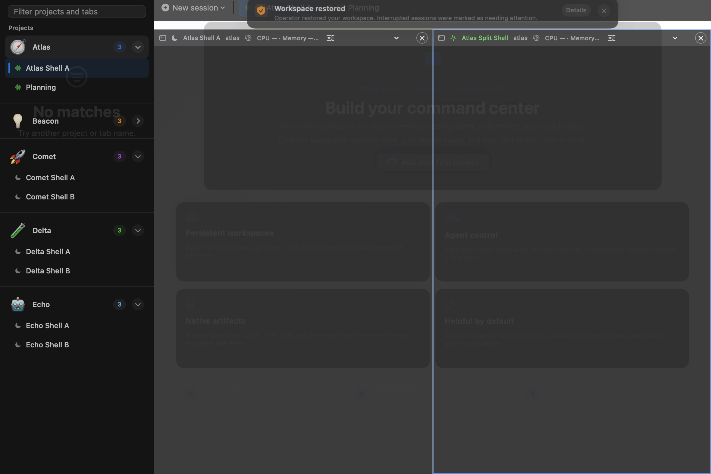

Task state
Store a task brief, route questions to their originating pane, record progress events, and open artifacts from a session.
Open source · Apache 2.0
Run coding agents, shells, repositories, and worktrees from a project-based native app. Keep layouts, task notes, activity, and Git inspection together.

Project-based workflow
Operator groups the files, sessions, and process state that belong to one task.
Add the repositories and worktrees that belong to a task.
Launch Codex, Claude, a shell, or a custom command from one palette.
See task briefs, questions, artifacts, and file changes by project and pane.
Open Markdown, diffs, and Git status beside the process that produced them.
Restore supported harnesses and shells without rerunning generic commands.
What the app keeps together
Use the app to locate a running task, review its workspace, and return input to the session that needs it.
Store a task brief, route questions to their originating pane, record progress events, and open artifacts from a session.
See branch status, changed files, rendered Markdown, and native diffs beside the relevant terminal session.
Supported harnesses and interactive shells can restore. Arbitrary one-shot commands remain manual.
✦ Open source implementation
Operator is Apache 2.0 licensed and built as one SwiftPM macOS package. The UI, terminal integration, state store, and tests are kept in the same repository.
Read the architecturePlaces to start
Add a command-palette action, change terminal settings, add a CLI harness adapter, or cover a restoration rule with a focused test.
Local state and clear boundaries
Operator does not need a hosted service to run. Its persisted state is limited to project, layout, and session metadata.
Run the app locally. It has no account system or prompt ingestion service.
Inspect a worktree without staging, discarding, committing, or pushing from the app.
The terminal helper authenticates each session before it routes events or artifacts.
Project metadata can persist. Terminal contents, prompts, and credential-like values do not.
Run from source
macOS 14+ and a Swift 6-compatible toolchain are all you need to get started.
$ git clone https://github.com/brcosta/operator-app.git
$ cd operator-app
$ swift run Operator
✓ Operator is running